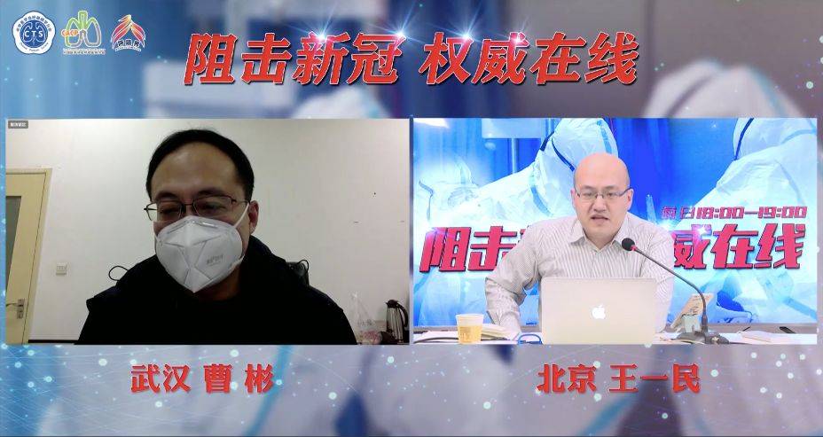

七问曹彬：瑞德西韦试验怎样了？
原文链接 备份链接 瑞德西韦试验怎样了？对于这项举世瞩目的试验，项目主持人、中日友好医院副院长曹彬在 3 月 1 日的一次在线直播中透露了最新进展。 曹彬是国家专家组第一批成员。他于 2019 年 12 月 31 号下午来到武汉，3 …
曹彬教授。图/新华视点
【编者按】新冠肺炎疫情暴发后，中日友好医院副院长、教育部“长江学者奖励计划”特聘教授曹彬是国家卫健委派到武汉的第一批专家。
在中华医学会呼吸病学分会、中国医师学会呼吸医师分会3月1日举办的一次连线访谈活动，他首次向同事王一民医生介绍了自己到武汉后的经历，以及外界非常关注、一度被传是“神药”的两种抗病毒药物——瑞德西韦（中青报冰点周刊2月6日报道：瑞德西韦临床试验结果未出）、洛匹拉韦/利托那韦临床试验的进展。
据曹彬透露，他们去年12月31日到达武汉，今年1月1日，他与北京地坛医院医生李兴旺作为第一批国家专家组成员，和武汉专家组共同撰写此次疫情中第一个版本的诊疗方案——《武汉不明原因的病毒性肺炎的诊疗方案（试行版）》，1月3日凌晨正式完稿。“这是这次疫情的第一版方案，定稿的时间是2020年1月3日凌晨1点。”（详见中青报冰点周刊此前对最早版本诊疗方案的报道：白皮手册与绿皮手册：新冠肺炎诊断标准之变）
“我们明确提出要把符合疾病定义的病人集中收治在有隔离条件的医疗机构。”他说。
关于新冠肺炎抗病毒治疗，曹彬还指出，最近武汉做了十几例病亡患者遗体解剖，最令人震撼的就是患者的肺泡腔、肺间隔里存在大量的病毒颗粒和病毒包涵体。“不把病毒清除掉，其他的治疗能管用吗？”有的病人肺损伤已经到了很严重的程度，即使上了ECMO也不能逆转。这都是在提示，病因治疗、祛除病因、减少病毒复制、减少病毒的清除时间才是治疗中最重要的部分。
“我还是反复强调病毒、病毒、病毒！治疗中最重要就是抗病毒、抗病毒、抗病毒！这是非常显而易见的逻辑关系。”
关于瑞德西韦的临床试验情况，2月24日，中国-世界卫生组织联合专家考察组举行的新闻发布会上，世界卫生组织总干事高级顾问布鲁斯·艾尔沃德提到，瑞德西韦“可能会有预期的效力”。
曹彬在此次访谈中透露，很多领导和同行都在反复“质问”他一个关于瑞德西韦临床试验的问题：“曹大夫，很多医院医生仅仅观察了几例、十几例就能看出效果来了。你这里都200多例了，怎么还不知道效果呢？”
这篇访谈里提供了曹彬的详细解答。全文刊发于中国呼吸学科垂直新媒体平台《呼吸界》（点击“阅读原文”查看访谈视频），中青报冰点周刊获授权转发。
提醒：这篇医生之间的访谈有阅读门槛，但信息量很大。
曹彬：首先谈谈目前武汉市的疫情情况。我们很高兴地看到，有一个方舱医院开始“休舱”了，说明没有患者新转入这个方舱医院了。而且，从中日医院医疗队收治的患者来看，最近一周共收治了近70个病人，有26个病人出院。目前在病区还有40多位病人，其中两位气管插管，一位气管切开，还有一个患者正在使用ECMO（人工膜肺）。从新入院的患者来看，几乎没有发病时间为一周以内的病例，我们的病区是在武汉同济医院的中法新城院区，从其他病区的国家医疗队处了解到的情况看，包括武汉协和医院等处，在最近一周发病的病人就非常少了。现在的住院病人，包括重症病人都是发病时间比较久的，比如发病两周以上、20余天的患者还是有很多的，我不是特别了解武汉市以外的地方，但是从我了解到的武汉市内的情况来看，新增患者的人数确实是在下降，这是一个非常令人高兴的信息。
王一民：听您提到“患者住院的时间比较长”，是不是说明这部分症状比较重的病人进入了我们所说的“拉锯战”状态？
曹彬：确切来说是这样的，我们课题组刚刚统计了一个数据，在存活出院的患者中，中位住院时间是22天，由此可见，对于重症病人或危重症病人，他们的住院时间都是比较长的。
王一民：这次《阻击新冠 权威在线》的专题，请您来讲关于“新药”中可期待的一些事情。我也参与了您团队很多的研究工作，您一直以来都非常关心“病毒性肺炎”在我国的疾病特点及临床诊治情况，而并不是这一次疫情才开始关注的，您认为您以前的临床经验对这次疫情的救治，以及开展新的研究有很大的帮助吗？
曹彬：感谢您这个问题。这次我们课题组牵头三项临床研究，是对两种药物进行临床试验——洛匹拉韦/利托那韦和两项瑞德西韦。其中，洛匹拉韦/利托那韦和瑞德西韦2纳入的患者都是符合重症和危重症标准的。首先我们看一下洛匹拉韦/利托那韦和瑞德西韦2这两项研究设计的最大区别是什么？
洛匹拉韦/利托那韦这项研究是一项前瞻的、随机的、对照的临床试验。瑞德西韦2研究的入选人群和洛匹拉韦/利托那韦的研究人群一样，都是重症和危重症肺炎患者，但两者有一点不同，洛匹拉韦/利托那韦研究中，我们没有限定患者从发病到入组的时间，美国NIH（国立卫生院）最近注册的瑞德西韦研究设计与我们早期洛匹拉韦/利托那韦研究设计很像。但是瑞德西韦2的研究设计较严格，这也是我们从流感病毒研究中得到的收获——很多感染科的医生、ICU医生或者呼吸科医生，大家应该都有“抗病毒治疗应该尽早”的体会，对于轻症流感，我们要求在发病48小时使用抗流感的药物，重症流感我们可以延长到发病的第5天。
就像我刚才讲的，现在武汉医院的一些患者都已经住院20多天了，这时候再入组，如果这位患者最终治愈了，敢说是因为抗病毒药物起效的吗？所以，我们在进行瑞德西韦2的研究设计时，就把抗病毒时间卡在了12天，这时我们也非常纠结，到底是卡在10天好、还是12天好，还是14天好呢？这个抉择很难。
另外，第3项研究就是瑞德西韦1，瑞德西韦1是研究轻症和中度的新冠病毒肺炎患者。
现在也非常高兴告诉大家，我们的洛匹拉韦/利托那韦的临床研究已经正式结题了。我们完成了199例洛匹拉韦/利托那韦的前瞻、随机、对照的临床试验。前几天，课题组把洛匹拉韦/利托那韦的临床研究结果向国家相关部门进行了全面的汇报。国家卫健委科教司组织了一次专家论证会，与会专家对我们这项研究做出了很高的评价，我们希望这样的研究成果能够尽快被国际社会，包括WHO所知晓。我们也希望这项研究成果能够成为我国下一版的诊疗方案有力的循证医学证据。
曹彬：为什么我们团队能够进行这样的临床试验的设计、临床研究的注册、临床研究的伦理批准呢？这和我们十几年的积累是息息相关的，如果没有这十几年的积累，我们不可能在大的疫情面前拿出较成熟的研究方案。在过去的十几年里，我们整个团队非常专注于社区获得性肺炎的研究、非常专注于成人社区获得性病毒性肺炎的研究。在2019年，我们团队有多项研究成果发表，其中一个就是对中国13个省的成人社区获得性肺炎，特别是病毒性肺炎的病毒谱，以及流感病毒肺炎和非流感病毒肺炎的发病情况、疾病严重程度和预后做了分析。
另外我想给大家说一下，在重症流感这方面，我们团队现在主持了多项重症流感的研究，包括联合法匹拉韦和奥司他韦治疗重症流感，包括我们对重症甲型流感和重症乙型流感的病情严重程度进行比较。这两项研究的第一作者都是王业明博士，去年这两项研究已经分别发表于JID和Open Forum Infect Dis。
曹彬：我为什么想提这两项重症流感的研究呢？是因为在这两项研究当中，我们就确定了重症成人病毒性肺炎中，我们应该采用什么样的研究终点。因为对于前瞻的、随机双盲的对照研究来说，两个要素很重要，第一，确定主要研究终点是什么，因为主要研究终点决定了需要入选多大的样本量。第二，研究人群是什么？实际上我和李兴旺主任作为第一批国家专家组，和武汉有关专家组共同在2020年1月1日执笔了适用于武汉地区的诊疗方案，因为当时病原还不明确，所以这一版诊疗方案名称是“武汉不明原因的病毒性肺炎诊疗方案（试行版）”。这是这次疫情的第一版方案，定稿的时间是2020年1月3日凌晨1点，在这一版指南当中，我们已经非常明确的提出什么是轻中度的肺炎、什么是重症肺炎。而我们判断轻中度肺炎和重症肺炎的标准是什么？就是我们曾经在针对重症流感肺炎的研究中所掌握的标准。过去几年里，在我们重症流感的救治经历中，这些定义已经应用得很好、很熟练了。“武汉不明原因的病毒性肺炎诊疗方案（试行版）”实际上为以后国家发布的系列《新型冠状病毒肺炎诊疗方案》提供了蓝本。在“武汉不明原因的病毒性肺炎诊疗方案（试行版）”里，我们明确提出要把符合疾病定义的病人集中收治在有隔离条件的医疗机构。
下面再说一下我们的研究终点，洛匹拉韦/利托那韦临床研究采用的是一个7分的复合终点指标，事实上现在越来越多的临床研究非常重视“复合终点”。临床医生可能会看到，有些病人气管插管长时间无法脱机；或病人虽然脱离了呼吸机，但离不开氧气；再或者，病人虽然脱离氧气，但因为各种各样的原因不能出院，始终在住院；以及，病人虽然出院了，但是出院后并没有恢复正常生活，所以，我们怎么能够量化复杂的临床预后？这就需要复合的终点指标。实际上，不仅仅是急性呼吸道传染病中采用了复合研究终点，我们读文献时，发现对于“脑中风的预后判断”，他们也采取了这种复合终点指标。
给大家举一个很简单的例子，一位病人脑中风了，最好的结果是先偏瘫、失语后慢慢完全恢复正常的状态，这是最佳的情况；但有些病人最严重的状态是中风后出现了脑疝，很快去世了；还有的病人中风后严重昏迷，根本就无法和家人交流，像植物人一样；还有病人中风以后就变成偏瘫，生活不能自理；有的中风以后虽然也是偏瘫，但是能够自己照顾自己，日常生活活动都不受限……
也就是说，研究中风的时候，我们很难只看中风后患者会不会出现脑疝死亡，这样对疾病预后的了解是不够全面的。同样的道理，在重症流感病毒肺炎，还有这次重症的新冠病毒肺炎中，我们研究时都采用复合的研究终点的指标，我们洛匹拉韦/利托那韦研究就是用的这样一个指标，后来我看到很多国内后续的一些研究，都沿用了或者参考了我们的这个研究终点的设计。

王一民：我首先非常关心一个事，也是很多网友都会关心的情况——临床研究有非常多的类型，为什么您这一次重点选定的三项研究都在关注药物？希望您能给我们介绍一下每项研究的研究背景和设计思路。
曹彬：我是作为国家专家组第一批成员，在2019年12月31号来到的武汉，下午2:00就到达了武汉，先在武汉卫健委短时间逗留了一下，然后专家组分成两拨，一拨是临床专家组，另一拨是以CDC流行病学专家为主，去华南海鲜市场进行流行病学调查。我们临床专家组的工作地点就在武汉金银潭医院。
我们到达武汉的前两天，大约12月29日的时候，武汉市多家医院收治的症状、体征、实验室检查都比较类似的一些疾病，陆陆续续的都转到了金银潭医院，所以我们第一批专家组工作的战场就在金银潭医院。在ICU查房，我们讨论了每个病人，和武汉专家组一起沟通之后，大家有一个非常强烈的印象，这个印象是什么呢？
曹彬：我们看到的所有的病人都有共同的特点，包括症状：发烧、呼吸困难、干咳、无痰、重病人呼吸困难，而且出现ARDS（急性呼吸窘迫综合征），有些出现了脓毒症的表现，这是临床表现。还有影像学，这些患者都惊人相似：双肺多发毛玻璃样浸润影，部分实变，有轻有重，轻的可能是低氧，重的是严重的呼吸衰竭，另外，这些病人有一些共同的实验室检查特点：白细胞正常或偏低，特别是淋巴细胞减少。我们来到武汉的第一天，我们和武汉的专家组已经都对这些病人临床特点做了一个非常详尽的描述。
这些特征就出现在《武汉不明原因的病毒性肺炎的诊疗方案（试行版）》里，实际上我们这版方案出来的是很快的。元旦那天我们开始写，1月3日凌晨正式完稿，这就是我国第一版诊疗方案的由来。我们当时为什么说这些病人是不明原因的病毒性肺炎？是因为他的表现，对于一个成年人，病毒性肺炎的鉴别诊断，我们首先，要看诊断是否成立，是否为肺炎。第二，病情的严重程度是什么？第三非常重要，我们成人社区获得性肺炎诊疗有6步法，其中第3步法，就是要推测可能的病原体。不仅是我一个人的印象，包括感染病专家、包括武汉市多家医院的呼吸科主任都不约而同的把这组病人聚焦到“病毒性肺炎”，它不像细菌性肺炎，没有一个病人PCT超过0.1ng/ml，根本就不可能用细菌性肺炎来解释。咱们常见的肺炎支原体肺炎、衣原体肺炎、军团菌肺炎也都不是这样的表现。
所以，虽然当时没有确凿的病原学证据，但是大家都很肯定的认为是病毒性肺炎。当然，说一点点病毒学的线索都不知道也不对，大家现在也都知道了，在当时我们到达武汉之前，已经有几例病人外送了NGS（指基因检测），NGS已经出具了一些报告，有的报告直接报了SARS，有的报告说是类似冠状病毒，所以我们来到武汉的时候也接受了这样的信息，结合这组病人临床表现是特别典型的病毒性肺炎，再结合我们获得的这种不全的信息，所以我们对这些病人认识和了解就锁定在“病毒性肺炎”，而且猜测很有可能是一种冠状病毒引起的肺炎，这就是我们当时和武汉专家组共同的印象。
曹彬：对于一种感染性疾病来说，氧疗、呼吸机，包括营养支持治疗，包括水电解质的平衡，包括预防的抗菌药物，以及有些医生推荐的激素，这都是辅助性的。最根本的是什么？最根本的就是对因治疗。通过检索文献，发现在SARS期间，特别在SARS的后半程，2003年4月份以后，香港大学袁国勇院士团队曾经做过SARS冠状病毒抗病毒药物的体外研究，结果发现两个药，一个是洛匹拉韦/利托那韦，另外一个是干扰素。
2003年香港医生把这两个药联合用于治疗SARS冠状病毒，但当时没有条件做RCT研究，因为已经是SARS后期，他们仅仅治疗了41例SARS，和之前未使用洛匹拉韦/利托那韦的患者去比，结果发现，用了洛匹拉韦/利托那韦这组病人的死亡和发生呼吸衰竭的比例大大降低。这给了我们一个很强的信心。而且几年前，韩国输入性的中东呼吸综合征（MERS）造成了院内暴发的时候，他们使用的方案也是沿用的洛匹拉韦/利托那韦方案。洛匹拉韦/利托那韦是一个蛋白酶的抑制剂，最早用于HIV病毒感染的治疗。事实上，我们在2019年12月31日就锁定了这个药物。但是，有两点问题当时我们还没有把握：第一，病原到底是不是冠状病毒？我们不知道，只能猜测。第二，即使是冠状病毒感染，洛匹拉韦/利托那韦这种药也没有治疗新型冠状病毒的适应症。对于这种情况，我们也向国家卫健委医政医管局领导进行了汇报，领导告诉我们：洛匹拉韦/利托那韦不能够直接用于临床，但可以进行一个临床研究设计，这是合情合理的。
我们也把这个想法和金银潭医院张定宇院长进行了充分的沟通，我们把所掌握的文献、证据和他仔细讨论了以后，张定宇院长非常支持。而且我们非常幸运的是，金银潭医院还有一个GCP研究团队，所以他们在做临床研究的时候是有一定基础的，从此我们就开始了密切合作。
早期，我们没有立即开始随机入组。因为在病原学未名的时候，医生没有使用洛匹拉韦/利托那韦的经验。当时，医生在治疗这种病毒性肺炎的时候也在使用抗病毒药，具体用的什么药，应该有人能猜到：一个是更昔洛韦，第二个是奥司他韦。这两个药联合使用。现在大家可能会对当时的治疗方案暗自发笑，认为太傻了，但是当时，在病原学不明、又考虑到病毒性肺炎的情况下，这是当时很多武汉医生无奈的不得已选择。
虽然我告诉大家，奥司他韦联合更昔洛韦没有用，但是，当我们突然提出来要使用洛匹拉韦/利托那韦的时候——用治疗HIV的一个二线药物来治疗这些患者，很多医生想不明白，都不同意，有很多的抵触心理。在我们在启动RCT研究之前，我们大概观察了20多例，这时候，有的医生反映这个药有效！但这只是个案，也就是仅仅只有一二十例。后面大家也知道了洛匹拉韦/利托那韦的故事了，曾经一度被宣传成“神药”，但这是我们RCT启动以后的事情。在早期，即使是我们一开始观察了20多例，部分大夫说有效的时候，我们都没敢讲“这个药可能是有效的”。我们仍非常严格地、耐心地启动了RCT的研究，我们首例病人入组是1月18日，从1月9日通过伦理委员会，到1月18日这一个星期左右，我们陆陆续续的观察了20多例的病人，但是没有启动随机研究。我们正式启动随机研究是在2020年1月18日，这就是我们洛匹拉韦/利托那韦临床研究的一个起点。截止到2020年的3月1日，我们洛匹拉韦/利托那韦临床研究一共纳入了199个病人，我们的随访日期是随机后的28天，目前最后一例病人的最后一天随访已经结束了，我们也已经向国家正式汇报了我们的研究结果。
王一民：刚才听到一个点，当时在SARS研究中，袁国勇院士是洛匹拉韦/利托那韦联合干扰素，因为有些人并不了解洛匹拉韦/利托那韦的研究方案，（不像瑞德西韦，已经在网上能够看到研究方案了），能不能在这两个随机对照分组上和大家再介绍一下，是不是单纯只是用了洛匹拉韦/利托那韦呢？干扰素是否加入了？是不是有安慰剂？
曹彬：实际上我们一开始研究方案就是沿用了香港的研究——洛匹拉韦/利托那韦+干扰素，但当时我们一起讨论时，李兴旺主任提到干扰素皮下或肌注的副作用特别多，其中包括发烧，因为这些病人本来就有发烧的症状，如果再使用干扰素的话，可能会影响我们对患者症状的观察。我们最开始在讨论的时候，是想用洛匹拉韦/利托那韦+吸入干扰素这样的联合治疗和标准治疗组进行比较，但是在随即入组前了20多例时发现一个问题，吸入的干扰素的话，首先，这些病人都住在隔离病区，隔离病区护士的工作量大大增加了，其次，产生气溶胶的风险会增多。再有，观察病人在吸入干扰素后气道反应比较大，出现了气道刺激的不良反应，所以我们启动RCT研究时，就修改了研究方案：分为两组，一个是标准治疗组，按照国家诊疗指南，另外一组在此基础上加了洛匹拉韦/利托那韦，因为当时的情况不像后来，我们无法进行非常仔细的临床研究的准备，条件也不具备，我们没有做到安慰剂对照，但我想给大家解释的是，我们的研究者，包括GCP的老师进行临床终点评价时，是不知道的。
另外我很高兴地告诉大家，因为我们做到了严格的随机，所以说两组的均衡性是非常好的，这两组的中位年龄都是58岁。另外性别比、基础疾病、入组当时的实验室检查，还有这些患者的病情严重程度，以及这些病人入组之后所使用的这些干预药物（包括激素），也都匹配。在这样的一个背景下，这两组唯一的区别就是其中一组多了“洛匹拉韦/利托那韦”，我们就可以比较有自信的去进行比较了，洛匹拉韦/利托那韦到底对重症的新冠状病毒肺炎有没有作用？用洛匹拉韦/利托那韦治疗之后，不良反应有多少？我们需要回答的两个最重要的问题，第一，有效没效，第二，副作用如何？有多大副作用？有没有致死性的副作用？这是我们需要仔细研究考虑的。
王一民：前一段时间，大家看到了上海公卫中心卢洪洲教授所回顾性的洛匹拉韦/利托那韦的研究结果，大家也听出来了，两项研究的研究方案设计、研究方案的结局、研究方案观察的病人数量都不太一样，所以可能就会有研究结果的差异，但我们千万不要做这样的一个横向比较，来看那个结果如何、这个结果如何……大家一定要客观看待临床研究的结论。

曹彬教授。图/国新办网站
王一民：我们再谈一谈大家非常关注的“瑞德西韦”这个药，刚才听到您介绍的，其实课题组也在非常早就关注到这个药了，也是来自于我们前面去筛查出来的、可能有效的一个药物，第一时间就进行了研究设计、伦理审查等等，请您再介绍一下，谢谢。
曹彬：瑞德西韦这个药物进入我们的视野是在洛匹拉韦/利托那韦之后，也就是在2020年1月初，我在1月9日离开武汉之前，我就把我们的第2个目标锁定到瑞德西韦，因为非常巧的是，当时刚刚有一篇文章在线发表在《Nature Communication》上，这是美国北卡教堂山医学院的一组医生做的动物实验，用MERS冠状病毒去感染小鼠，在动物实验当中，他们就观察了两个药，一个是洛匹拉韦/利托那韦+干扰素，沿用的SARS和MERS的治疗方案，第二，我们非常惊讶地看到，他们还试验了另外一个药物，也就是现在官方所说的瑞德西韦，所以说大家可以看到我们课题组跟踪文献还是非常非常及时的。
就在这个研究当中，我们还非常惊讶的看到，MERS冠状病毒的动物模型中，洛匹拉韦/利托那韦+干扰素能够保护小鼠、减少肺损伤，降低小鼠的死亡率，但研究者观察了病毒的下降幅度，发现并没有统计学差别。但是，我们又看到瑞德西韦同样能够保护小鼠、同样能降低肺的损伤，同样能降低小鼠的病死率。而且，瑞德西韦降低病毒滴度的能力是很显著的。这给我们一个非常大的震撼，就是说，无论是SARS也好，MERS也好，至少在动物模型上，他们所用的洛匹拉韦/利托那韦+干扰素方案的效果远远不如瑞德西韦，而且我们也很好奇地看到，瑞德西韦难道仅仅就停留在动物实验的层次上吗？结果，通过发表的文献，我们也很幸运的发现，这个药物原来在2019年11月刚刚在《新英格兰医学杂志》上发表了一项人体研究。当然，这项人体研究不是研究的冠状病毒，而是研究的西非的“埃博拉病毒”。
这项研究至少给我们一些信心，就是说，瑞德西韦这个药物至少已经在非洲人身上进行过人体试验了，至少我们能看到在非洲人群的药物安全性数据。这就是我们在洛匹拉韦/利托那韦之后锁定瑞德西韦的一个故事！
王一民：我能不能这样理解——因为很多网友会非常关心，一个药物有没有效果和安全性，这是两项重要的指标，在“有没有效果”方面，您用第1篇文章发现在体外的活性是非常良好的，而安全性的问题，虽然埃博拉病毒应用瑞德西韦没有看到这么好的阳性结果，但至少您刚才提到的“安全性”。这样的结果是我们能通过第二篇文章得到的结论。
曹彬：对，所以说非常幸运的，我们既拿到了动物实验的有效性的证据，又拿到了在人体试验当中，瑞德西韦的人体安全性的数据，所以说，这就给我们增加了很大的信心，促使我们去联系，在中国开展瑞德西韦的临床研究。
王一民：我汇总了一下大家比较关心的问题，其实有一个问题，在您刚刚开始介绍我们的研究的时候，跟我们说到了“结局”，很多专家也在关心，为什么这一次轻症时候，我们选择的临床结局是临床恢复的时间，而没有选择大家关注的“轻症到底是不是能遏制到重症”的过程？而重症的临床结局，您刚才解释了，我们用的是复合结局指标，没有选择病死率，能不能再给我们解释一下，轻症的临床结局的选择是出于什么考虑？
曹彬：因为轻症病人大多是自限的，因为即使是新冠状病毒，大家看到武汉的病死率很高，但是对于这样一个新发的呼吸道病毒性疾病来说，大多数是自限性的，所以我们在对轻中症患者的设计方面，我们和重症患者设计是完全不一样的。实际上这是两个完全不同的临床研究，对于重症新冠肺炎，我们关心的它的“硬终点”，就是说它能够导致患者致死、致残的这样终点，当然死亡是我们硬终点之一，但不是全部，在我们的重症瑞德西韦研究当中，我们的复合终点指标中涵盖了28天病死率，但我们为什么不敢用28天病死率呢？因为如果我们想做出一个统计学差别来的话，如果采用28天病死率，对样本量的需求是非常大的。而我们一开始我们也不知道新冠肺炎的病死率到底是多少，所以我们没法计算样本量。而我们的复合终点指标，我们至少有重症流感的研究基础了，我们有这样的一个基础来帮助我们进行比较合理的样本量的计算，这是这非常重要的。
对于轻症病人来说，我们当然不排除有极少数的轻症病人最后转成重症，这是有可能的，但从这个疾病的规律来说，85%以上的病人都是自限性的疾病。如果你想解决如何减少轻症病人转为重症这个科学问题，我认为必须得先了解哪些患者能够转变成重症，先确定有重症危险因素的病人，然后把这个人群作为研究对象。你的入选标准当中必须符合两条，第1条，轻症肺炎病人，第2条，同时具备有可能转为重症的危险因素，只有把这两条作为入选标准的时候，研究终点、设计才能够是轻症转为重症的人数，否则的话85%的病人都是自限性的，要想做出那一点点轻症转成重症的差别，基本上是没办法达到的。
王一民：我相信大家能够理解，我们这样的研究还是积累的结果，是来自于之前大量临床研究和文献阅读的总结和设计，也希望大家能够理解我们这种临床结局的设定。其实在网上，我们还看到一个消息，在2月21日时，您刚也提到了美国NIH下面的一个研究所也开始了一项关于瑞德西韦的研究，这项RCT研究当中的结果和我们略有不同，他们提到了一个事情：会有一个中期分析的结果、允许调整对照组的干预。比如说这个药物特别有效，我就把它在中期时就调整为一个对照组，去作为一个试验，来看别的药物是不是能够同样有效。那您觉得怎么看待我国的方案和美国方案的差异呢？
曹彬：我觉得本质上是没有差别的。实际上在咱们瑞德西韦2的研究当中，同样有中期分析的研究设计，中期分析不是由研究者分析的，它有一个独立的安全委员会或数据管理委员会来进行分析的，而且我们瑞德西韦临床研究的独立委员会共有5个人，其中两位是国内专家，三位是国外专家，包括美国一位、加拿大一位、英国一位，这五位专家中有三位是统计学方面的，另两位是临床专家，他们从后台看我们的数据，然后去评判。而且还不仅仅是中期，他们可以有计划地查看项目进展、实时的去看两组之间的疗效差异，虽然实际上是随机的安慰剂对照双盲的，但是它的效果有可能会呈现出“离散度越来越大”的态势，如果药是有效的，那么离散度会越来越显现出来。
王一民：我能不能理解成，要么是特别有效，要么是危害性特别大？
曹彬：可能有三种可能，一是：药物不良反应造成了病人意外的死亡，所以死亡率会增加；二是活性药物有效，病死率下降。但这种差别必须当入选病例积累到一定程度的时候，独立委员会在后台才能看到这样的差距。第三种可能性是：除了有效和有害，还有活性药物在标准治疗上无额外作用的可能性。
当达到一个节点的时候，独立委员会可能会叫停这个试验。如果是活性药，证实有效的话，这个试验就停止了，所有的病人就都建议使用活性药物。如果是另外一种情况，副作用特别大，也必须叫停实验，这个药就被“枪毙”掉了，以后再也不允许这个药物在人体当中开展临床研究。
王一民：虽然我们目前不太了解最终的结果，那能不能有一些能够“透露”给我们的信息？
曹彬：我们现在瑞德西韦2的研究已经超过了230例，已经达到了中期分析所需要的样本量，但是“达到样本量”和“能进行中期分析”是完全两个不同概念意义，为什么呢？因为入组不代表就可以进行评价了，还需要28天的随访，当然也不代表就一定是28天，因为我们的终点是“只要达到临床结局”，我们就可以进行评价。所以，做为研究者，我们也很期待——这230多个病人都达到到临床结局的时候，能不能出现一个节点？这个节点就能够让独立安全委员会做出一个客观的、科学的评价，如果真能达到这样一个结局时，我们就不需要入组453例病人了，有可能入组400例或者300例就可以了。
王一民：很多一线医院的医生会说，自己在管理病人的时候，患者病情的变化导致抉择困难，到底该加什么药物、减什么药物？做决策时，他希望有临床研究能回答这些问题。但现在的临床研究都没有涉及到这些特别特别细节的临床问题，应该怎么来看待这个事？
曹彬：这实际上是指“怎么理解临床研究和临床工作这两者”。我的理解是这样，临床研究实际上也是临床工作，只不过在临床研究工作当中，严格地限定了研究用药能用还是不能用，而且也限定了对照组或所有人群都要按照一个标准规范来进行。我觉得对任何一位医生来说，参加临床研究的话，必须要做出“服从standard”的承诺和保证，这就限定了临床医生一些特别个性化的处方、处置，而医生的这些个性化的处方常常是缺乏循证医学证据的。我不反对将有循证医学的治疗加入到临床实践当中，但是如果是没有经过证实的，如果要参加临床试验，那必须服从standard（标准），不允许过度地使用一些未经证实的治疗手段或药物。
我还想解释一些，最近两个月，很多领导和同行都在反复“质问”我：曹大夫，很多医院医生仅仅观察了几例、十几例就能看出效果来了。你这里都200多例了，怎么还不知道效果呢？
我觉得这个问题很难回答，就像我刚才我给大家解释洛匹拉韦/利托那韦时，在做RCT之前，我们实际上已经观察20多例，有些病人是有效的，但是如果我们继续观察20例，可能又是无效的。因此，要想回答每种疗法有效性的问题时，必须进行前瞻随机对照研究。可能又会有人问：“曹大夫，你不傻吗？你一月初的时候就发现洛匹拉韦/利托那韦对部分病人有效，怎么不说出来呢？”
王一民：我能不能理解成，这是因为很多的一线的医生其实没有特别多的临床研究经验，甚至缺少一些临床研究的训练和思维的培训，他们更擅长于看患者、用药治疗患者，而真正参与临床研究的经验比较有限。您在回答这个问题的时候，能否捎带着说一说，哪些“素质”是临床研究所必须具备的？这和我们看病人、治病人可能略有差别。
曹彬：感谢您的问题。刚才我已经说了，我们为什么能够锁定洛匹拉韦/利托那韦和瑞德西韦这两个药呢？就是因为看书、看文献，如果不读书、不读文献的话，怎么会知道这个世界上还有这两种药物呢？我觉得这是第一步的要求。
第二个要求是“需要怀疑”，千万千万不能听说某种药有效，就敢给病人普遍临床应用。做为一个受过医学训练的人，贸然用药是很可怕的一件事情。另外，我们在对医学生、进修医生的培养教育方面，经常反复说一件事，就是“工作时间长不代表有经验”。事实上，我们经验的积累一定是建立在循证的基础上建起来的。因为我们专业主要是做肺炎方面，例如，一个医疗组一个月间收治了100个病人，这100个患者中，有几个真真正正能够把故事讲清楚的？病原学明确了吗？根据病原学药敏结果用药，患者是否像预期结果一样治疗好了？而且临床表现是不是和我们所掌握的基本规律是一致的？
在咱们临床看到的100个患者当中，我们真正能够拿到循证医学证据的，我觉得不超过两位数，甚至个位数。在病原学诊断能力比较强的医院，可能能够达到20、30位，但是有的医院我觉得可能就是0。但是大家千万不要因为所在的医院病原学诊断的能力比较弱，就不追求病原学诊断了，这是完全错误的！哪怕一个月管的100个患者中，只有1个病人有循证医学证据，那就是非常宝贵的经验。这1个病人才叫经验，你管理其他99个病人都不会获得有价值的经验，而且有可能还把错误的经验当经验了，那就更加会伤害你的下一个病人。
提起这点我有点激动，刚才提到“素质”，我觉得这还和素质没有任何关系，就只是平时管病人时的习惯、态度，你读不读书，就直接决定你会不会受不良的信息的影响。做临床医生，刚才我们提到要读书、要怀疑，要自己做独立判断，这点这一点非常重要。最后，经验的积累，一定要建立在证据的基础上，没有证据，谈什么经验？
王一民：请曹教授对我们今天的话题做个总结。
曹彬：还是回到原来那个话题，对于新型冠状病毒肺炎，无论轻和重，抗病毒治疗都是重中之重。不对它的病因进行治疗和干预，那么其他的治疗都是很被动的，所以大家在工作当中，都要想尽一切办法去抑制病毒。
事实上，我们现在观察到的情况是这样的：冠状病毒在体内的存在和排毒时间是非常长的，最近武汉也做了十几例的遗体解剖，最震撼大家的就是患者的肺泡腔、肺间隔里大量的病毒颗粒和病毒包涵体。想象一下，重症病人躺在床上，肺上的病毒都满了，大量的病毒颗粒在电镜下可以看到非常典型的花冠状的病毒颗粒，不把病毒清除掉，其他的治疗能管用吗？另外激素也是次要的，患者的炎症表现是因为病毒所激发的过度炎症表现，不把病毒清除掉，只用免疫抑制剂，能行吗？
呼吸支持是非常好的手段，能够使患者赢得宝贵的康复时间。但不是每个病人都这么幸运，有的病人肺损伤已经到了很严重的程度，即使上了ECMO也不能逆转。这都是在提示我们，病因治疗、祛除病因、减少病毒复制、减少病毒的清除时间才是治疗中最重要的部分！
这种病的病理生理机制就是“病毒性肺炎”和“病毒性肺炎所引起的全身的炎症反应”，我们还看到很多危重症病人出现了休克，但实际上，他没有合并细菌感染，而只是单纯的病毒感染，所以，我还是反复强调病毒、病毒、病毒！治疗中最重要就是抗病毒、抗病毒、抗病毒！这是非常显而易见的逻辑关系。
王一民：谢谢曹教授。他给大家灌输的理念，让我回想起我们在临床工作当中一直提到的一个词，一定是“科学”，第二是“规矩”。我们在做的事情一定是最“科学”的事情。虽然还有一些未解、未知的话题，我们面对的病毒都是未知的，但我们一定用科学的态度去面对它、用科学的武器去打败它。“规矩”是什么？规矩来自于我们的临床上每一天的训练，来自于临床研究每一次的扎扎实实的训练，来自于你，或者你所在的团队积累的结果，肯定不会一天就能做出洛匹拉韦/利托那韦、瑞德西韦的研究，也不会一天就能清楚了解到病毒性肺炎的特点，再次强调“经验一定是来自于日积月累”。
所以我希望大家能够感受到曹彬教授灌输给大家的：抗病毒很重要，但并不是说其他的支持不重要，一定要分清主次，分清我们在现阶段科学认识疾病时的规矩，我希望大家能够跟我有同样的感受，也希望大家耐心地等待我们瑞德西韦的临床结果的展示。
中国青年报·中国青年网出品

觉得好看请点这里
原文链接 备份链接 瑞德西韦试验怎样了？对于这项举世瞩目的试验，项目主持人、中日友好医院副院长曹彬在 3 月 1 日的一次在线直播中透露了最新进展。 曹彬是国家专家组第一批成员。他于 2019 年 12 月 31 号下午来到武汉，3 …
原文链接 备份链接 早在 2 月 4 日，吉利德的 2843 箱瑞德西韦药物就已经运抵北京，时至今日人们却听到了入组患者太少的消息，“人民的希望”被浇了一头冷水。 瑞德西韦是被世界卫生组织认为是目前唯一可能抗击新冠病毒的药物。“人民的希 …
原文链接 备份链接 美国一个新冠肺炎患者使用瑞德西韦治愈的消息发布后，流传出很多该药有“奇效”的消息，但都仅仅是“美好的愿望”。 新冠肺炎确诊、疑似、死亡人数都在不断上升，人们太需要看到希望了。 瑞德西韦的前一代药物，对治疗猫冠状病 …
原文链接 备份链接 文·图 |《财经》记者 李斯洋 编辑 | 马克 2月6日，首批新型冠状病毒肺炎的重症患者于武汉金银潭医院正式接受新药瑞德西韦（Remdesivir）的临床测试。 2月5日下午，中国工程院院士、中日友好医院原院长王辰，中 …
原文链接 备份链接 新冠病毒肺炎的临床治疗有了新进展：一款未上市的药物在一名美国重症患者身上使用后，症状得到了明显缓解。这款叫做瑞德西韦（remdesivir）的药物也一夜之间受到了前所未有的关注，几天之内中国药监局确认受理瑞德西韦的临 …